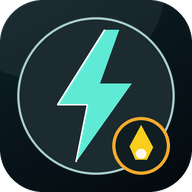
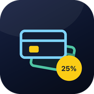
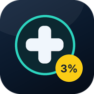
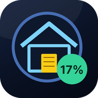
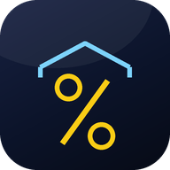
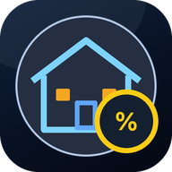

생활비 계산기 27종
이번 달 새는 돈부터
전세·월세 전환까지, 3초에.
청구서 숫자 몇 개만 넣으면 끝납니다. 전기요금 누진세와 도시가스 MJ 난방비·복지할인·에너지바우처, 매달 빠져나가는 고정비와 숨은 지원금, 부업 3.3% 세금과 건강보험료, 카드 25% 문턱과 체크카드 30% 황금비율·12월 배분, 연말정산 환급액, 차령 반영 자동차세와 1월 연납 할인, 육아휴직 급여와 부모급여·아동수당, 퇴직금과 실업급여, 청약 가점과 특례대출 월 이자, 연봉 실수령액, 전세·월세 전환율과 전세대출 vs 월세 주거비, 건강보험료 7.19%와 피부양자 자격·임의계속가입, 적금·예금 만기 세후 수익률과 비과세 한도·목돈 역산, 대출 갈아타기 순이익과 손익분기·중도상환수수료·일부 상환, 취득세 1~3%와 다주택 중과 8%·12%, 1세대 1주택 12억 초과분 안분과 장기보유특별공제, 증여재산공제 6억·혼인출산 1억, 매출세액−매입세액 부가세와 간이과세 부가가치율 15~40%·납부면제 4,800만원, 노란우산 소득공제 600만원, 연금저축·IRP 세액공제 900만원과 ISA 전환 300만·만 55세 연금수령 5.5%, 매매 5억의 복비 200만원과 전세 3억의 90만원, 월세 환산보증금과 부가세 10%·4%, 이사비·입주청소·인지세·확정일자, K-패스 일반 20%·청년 30%·저소득 53.3%와 정액형 62,000원 초과분, 월 15회 문턱과 60회 상한 폐지, 기후동행패스와 자차 출퇴근 유류비 비교, 실손보험금을 뺀 의료비 세액공제와 3% 문턱·난임 30%·산후조리원 200만원·안경 50만원, 실손 청구가 유리한지, 고향사랑기부금 10만원 전액·20만원까지 44%·답례품 30%와 정치자금·특례·일반·종교단체 기부금 15%·30%, 결정세액 0원일 때 사라지는 공제, 무주택 세대주 월세 17%·15%와 전세대출 원리금 40%·400만원 공제, 현금영수증 30% 전환 유불리, 재산세 43~45%·특례 0.05~0.35%·도시지역분 0.14%·교육세 20%와 종부세 12억/9억 공제·60%·세액공제 80%·농특세 20%, 단독 vs 공동명의 손익, 어린이집 0세 58만 4천원·사립유치원 4세 방과후 51만원과 4~5세 무상교육, 초3 방과후 이용권 50만원, 교육비 세액공제 15%·1명당 300만원까지 — 설치 없이 브라우저에서 바로 계산해 보세요.
겨울 전기요금 계산기
한전 주택용 누진제로 이번 달 요금과 누진 단계를 계산하고, 히터·온수매트를 더했을 때 늘어나는 요금까지 확인합니다.
요금 계산하기
전기요금 · 도시가스 · 복지할인전기요금·도시가스 계산기
한전 주택용 누진 1~3단계(200·400kWh, 하계 300·450kWh)와 기후환경 9원·연료비조정 5원·부가세 10%·전력기금 2.7%를 그대로 계산합니다. 도시가스는 ㎥를 MJ로 바꿔 서울 22.5268원/MJ와 516MJ 취사 기준으로, 다자녀 30%·수급자 경감·에너지바우처까지 1년 혜택으로 보여 줍니다.
전기·가스비 계산하기 피부 루틴 · 파이업룰루뷰 루틴·파이업 가이드
피부 타입과 고민(속당김·민감·모공·잡티)을 고르면 룰루뷰 제품 조합과 순서, 오늘 가격(부스터 52,000원·세럼 68,000원·리본 크림 100,000원)이 바로 나옵니다. 파이업은 2차 모집 불인정·180일 재구매·승급 실적 3가지를 표와 도식으로, 크리에이터 세트 결제부터 출금·3.3% 세금까지 8단계로 정리했습니다.
루틴·구조 보기고정비 체크기
새는 고정비와 구독료를 진단하고, 2026년에 놓치기 쉬운 지원금·환급금을 찾아 1년에 아낄 수 있는 돈을 계산합니다.
30초 진단하기N잡 세금 계산기
3.3% 떼인 부업 수입이 5월 종합소득세와 건강보험료를 얼마나 올리는지, 피부양자 탈락 여부까지 계산합니다.
세금 확인하기연말정산 환급 계산기
카드 25% 문턱과 체크 30% 황금비율, 연금저축·IRP·월세·의료비·교육비 세액공제로 2027년 2월 예상 환급액을 계산합니다.
환급액 계산하기
카드 공제 · 12월 배분카드 황금비율 계산기
총급여 25% 문턱을 넘긴 금액에 신용 15%·체크 30%·전통시장·대중교통 40%. 기본한도 300만원(자녀 1명 350·2명 400만원)과 추가한도 300만원까지 반영해 예상 절세액을 계산하고, 남은 12월 지출을 어디로 쓸지, 맞벌이 부부가 누구 카드로 몰아줄지 비교합니다.
공제액 계산하기
의료비 공제 · 실손 차감의료비 세액공제 계산기
총급여 3% 문턱을 넘긴 의료비에 일반 15%(700만원 한도), 본인·6세 이하·65세 이상·장애인 15%(한도 없음), 난임 30%, 미숙아 20%. 실손보험금은 의료비에서 빼고, 안경 1인 50만·산후조리원 200만 한도까지. 실손 청구가 유리한지, 맞벌이 부부가 누구에게 몰아줄지도 비교합니다.
환급액 계산하기 고향사랑기부제 · 답례품고향사랑기부제 계산기
10만원까지 전액(100/110), 2026년 기부분부터 20만원까지 40%(지방세 포함 44%), 그 위는 16.5%. 답례품 30%까지 더해 실제 부담과 순이익을 계산합니다. 정치자금·특례·일반·종교단체 기부금 15%·30%와 소득금액 한도, 결정세액 0원일 때 사라지는 공제까지.
혜택 계산하기
월세 공제 · 전세대출월세 세액공제 계산기
무주택 세대주가 낸 월세는 총급여 5,500만원 이하면 17%, 8,000만원 이하면 15%(연 1,000만원 한도). 국민주택규모 85㎡ 또는 기준시가 4억원 이하, 2026년부터는 주말부부 배우자도 따로 공제받습니다. 전세대출 원리금 40%·연 400만원 소득공제와 현금영수증 30% 중 유리한 쪽까지 계산합니다.
환급액 계산하기
복비 · 이사비용 · 확정일자복비·이사비용 계산기
매매 0.4~0.7%·한도 25만·80만원, 임대차 0.3~0.6%·한도 20만·30만원으로 1인당 복비 상한을 계산합니다. 월세는 보증금+월세×100, 5천만원 미만이면 ×70. 부가세 10%·4%, 협의요율 비교, 이사·입주청소·인지세·등기수수료까지.
복비 계산하기 K-패스 · 환급 · 출퇴근K-패스 환급 계산기
월 15회 이상이면 일반 20%·청년 30%·저소득 53.3%. 정액형(수도권 62,000·100,000원)과 비교해 큰 금액을 자동 적용하고, 기후동행패스·일반카드 실부담과 자차 출퇴근 유류비까지.
환급액 계산하기자동차세 연납 계산기
배기량과 최초 등록 연도로 차령 경감을 반영한 자동차세를 계산하고, 1월 연납 할인액(약 4.58%)과 겨울철 기름값까지 한 번에 확인합니다.
할인액 계산하기 육아휴직 · 부모급여육아휴직·부모급여 계산기
통상임금과 휴직 개월 수로 육아휴직 급여와 6+6 부모 함께 육아휴직제를, 자녀 나이로 부모급여·아동수당·첫만남이용권까지 계산합니다.
지원금 계산하기 보육료 · 유아학비 · 교육비보육료·유아학비 계산기
어린이집 0세 58만 4천원, 사립유치원 4세 방과후 51만원(28만+7만+5만+무상 11만). 4~5세 무상교육·보육과 연장보육료, 초1·2 매일 2시간 무상 늘봄, 초3 방과후 이용권 50만원, 교육비 세액공제 15%까지 계산합니다.
지원금 계산하기 국민연금 · 기초연금국민연금·기초연금 계산기
2026년 연금개혁 기준(보험료율 9.5%·소득대체율 43%)으로 노령연금 월 예상액과 부양가족연금액을 계산합니다. 조기 연 6% 감액 vs 연기 연 7.2% 증액 비교와 누적 손익분기 나이, 기초연금 선정기준액 소득인정액 모의계산까지.
연금 계산하기퇴직금·실업급여 계산기
입사일·퇴사일과 3개월 급여로 예상 퇴직금과 퇴직소득세를, 고용보험 기간과 나이로 실업급여 1일액·받는 날수·총 수령액을 계산합니다. 아르바이트 주휴수당까지.
받을 돈 계산하기청약 가점·특례대출 계산기
무주택기간·부양가족수·통장 가입기간으로 청약 가점(84점 만점)을 계산하고, 신생아 특례대출의 한도·금리와 월 상환액·총 이자까지 확인합니다.
가점·한도 계산하기 전세 · 월세 · 주거비전세·월세 전환 계산기
법정 전환율 5.25%로 전세보증금을 월세로 바꾸면 얼마인지 계산하고, 전세대출 이자와 월세 중 어느 쪽이 싼지 손익분기점까지 비교합니다. 주담대 월 상환액도.
월 주거비 비교하기 건강보험료 · 피부양자건강보험료·피부양자 계산기
2026년 7.19% 기준으로 직장가입자와 지역가입자(소득+재산, 자동차 폐지) 보험료를 비교하고, 피부양자 자격과 퇴직 후 임의계속가입이 유리한지 계산합니다.
보험료 비교하기연봉 실수령액 계산기
연봉에서 4대보험료·소득세·지방소득세를 뺀 월 실수령액을 계산하고, 받고 싶은 실수령액에서 연봉을 역산합니다. 식대 비과세와 부양가족 수까지.
실수령액 계산하기 예적금 · 비과세예적금·비과세 계산기
적금·예금 만기 세후 수령액을 단리·월복리로 계산하고, 일반과세 15.4%와 비과세 0%를 나란히 비교합니다. 예금 vs 적금 차이와 목돈 1,000만원에 필요한 월 납입액까지.
만기 수령액 계산하기 대출 갈아타기 · 중도상환대출 갈아타기·중도상환 계산기
금리차와 중도상환수수료·부대비용으로 갈아타기 순이익과 손익분기 개월을 계산하고, 경과일수로 수수료를 일할 계산합니다. 일부 상환이 유리한지까지.
갈아타기 손익 계산하기 취득세 · 양도세 · 증여세부동산 세금 계산기
집을 살 때 취득세·지방교육세·농어촌특별세를, 팔 때 12억 초과분 양도세와 장기보유특별공제를, 줄 때 증여세와 10년 합산 공제를 2026년 세율로 계산합니다.
부동산 세금 계산하기
재산세 · 종부세 · 공동명의재산세·종부세 보유세 계산기
2026년 공시가격으로 재산세(1주택 43~45%·특례 0.05~0.35%·도시지역분 0.14%·교육세 20%)와 종부세(12억/9억 공제·60%·세액공제 80%·농특세 20%)를 계산합니다. 단독명의와 부부 공동명의 18억 vs 12억 특례도 비교합니다.
보유세 계산하기 부가세 · 간이과세 · 노란우산부가가치세 계산기
일반과세는 매출세액 10%에서 매입세액을 빼고, 간이과세는 업종별 부가가치율 15~40%×10%로 계산합니다. 간이 4,800만원 납부면제·세금계산서 의무와 간이 vs 일반 유리한 쪽, 노란우산 소득공제 600만원까지.
부가세 계산하기 연금저축 · IRP · 연금수령연금저축·IRP 계산기
총급여 5,500만원 이하면 16.5%, 넘으면 13.2%로 연금저축 600만원·IRP 합산 900만원 세액공제를 계산합니다. ISA 전환 추가 300만원, 만 55세 연금수령한도와 5.5% 세금, 1,500만원 초과 시 16.5% 비교까지.
환급액 계산하기요금표·제도 해설은 블로그에
계산기 뒤에 있는 한전 요금표, 지원금 조건, 부업 세금 규칙, 연말정산 세법, 자동차세 연납 규정, 육아휴직·부모급여 기준, 퇴직금·실업급여 계산법, 청약 가점과 신생아 특례대출 조건, 이자소득세와 비과세 한도, 취득세 중과와 양도세 12억 안분, 증여공제, 부가세 신고와 간이과세 부가가치율, 노란우산 절세, 연금저축·IRP 세액공제와 연금수령 세금, 부동산 중개보수 상한과 월세 환산, 이사·입주 비용, K-패스 환급률과 카드 선택, 의료비 3% 문턱과 실손보험금 차감·난임시술비 30%까지, 보육료·유아학비 단가와 4~5세 무상교육·늘봄 이용권·교육비 세액공제까지 글로 풀어 두었습니다. 계산 결과와 함께 보면 이해가 빨라요.